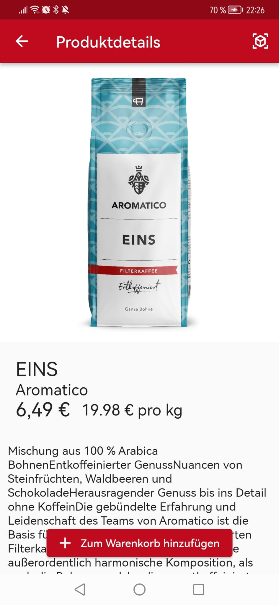
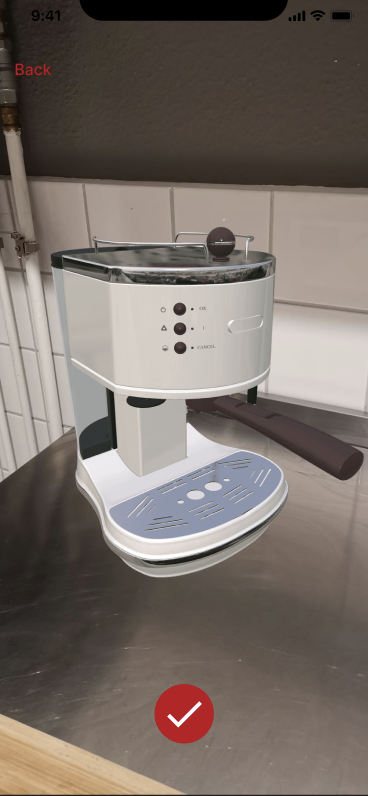
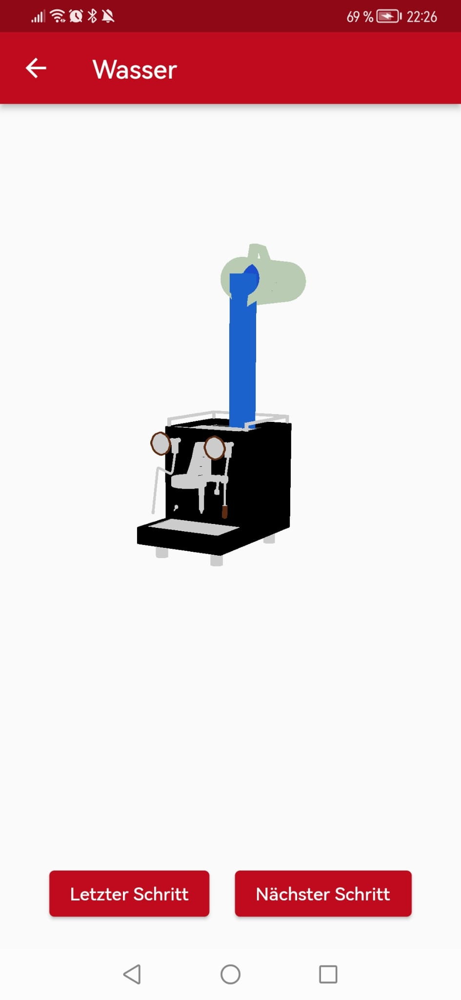
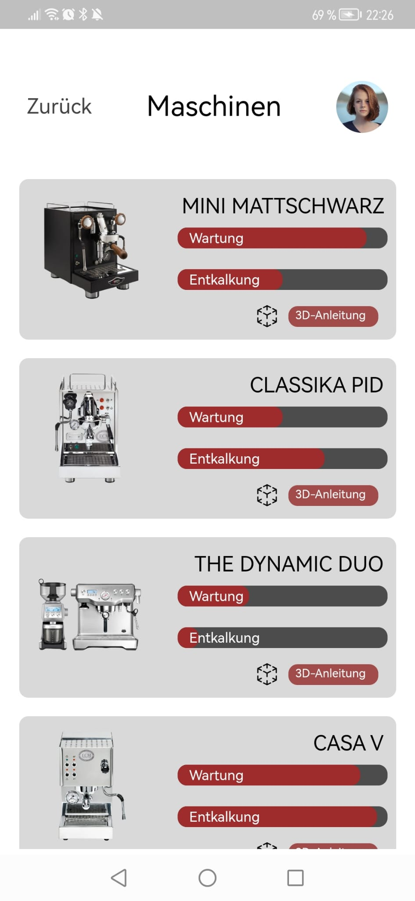
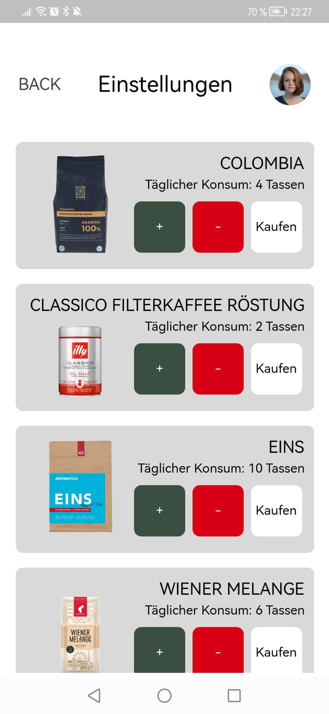

Der Shop als App!
Mit einer Menge innovativer Features!
Wir zeigen Ihnen Vorschläge passend zu ihren Einkäufen.
Favorisieren sie Artikel, so dass sie diese bequem und einfach wieder bestellen können.

Testen sie ob die Kaffeemaschine zu ihrer Küche passt.
Mit unserem Place in The Room Feature platzieren sie ein 3D Modell der Kaffeemaschine in ihrer Küche.

Nie wieder Probleme bei der Wartung ihrer Kaffeemaschine
Unser 3D Manual zeigt ihn ganz bequem Schritt für Schritt wie sie die Wartung ihrer Kaffeemaschine durchführen.
Nie wieder lästige Papieranleitungen!

Behalten sie die Übersicht über ihre Kaffee Maschinen und wann sie die nächste Wartung durchführen müssen.

Bestimmen sie ihren täglichen Konsum.
Kontrollieren sie ganz einfach wie viel von welchem Kaffee sie trinken.